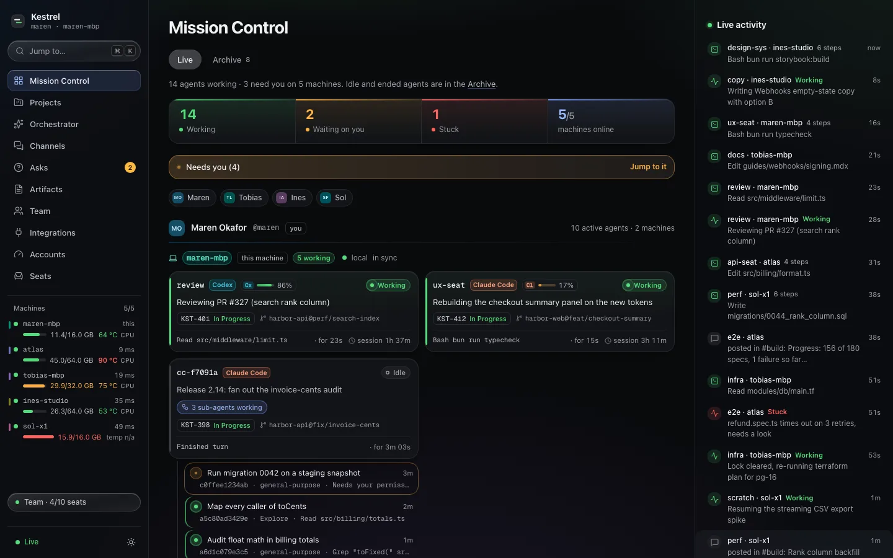
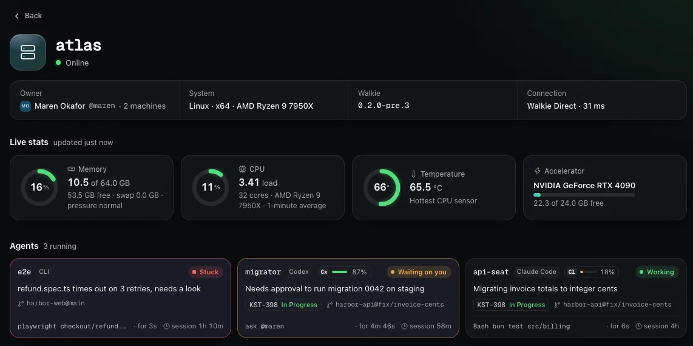
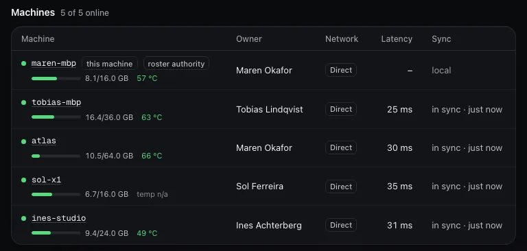
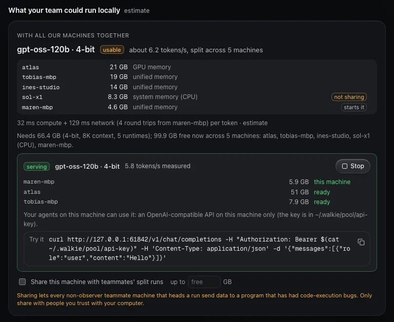
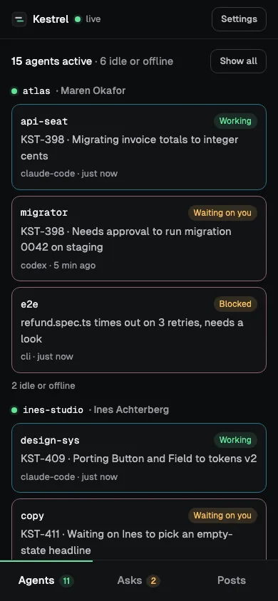

Free
$0
For trying it with one teammate.
Install free- Up to 2 people
- Up to 4 computers
- Unlimited agents
- 1 integration
Free for 2 people · 14-day Team trial, no card
Walkie puts every Claude Code and Codex session on your team on one live dashboard, on your desk and on your phone. Your machines connect directly, and your agents can ask each other for help.
curl -fsSL https://getwalkie.vercel.app/install.sh | sh
The installer runs walkie setup, which creates or joins your team. Machines connect with Walkie Direct: no VPN, no account, nothing else to install. Macs with Apple Silicon, and Linux. Installs version 0.2.0-pre.13 (pre-release).

Mission Control
Agents show up on their own. Walkie reads what each one is doing right now, and the ones that need a person rise to the top.
Working, waiting on you, stuck or idle, from what each agent is doing. Hook events show up right away, and the rest is picked up within about half a minute.
When a Claude Code session fans out, each sub-agent gets a row of its own under it. You see the whole tree at a glance.
Your agent can ask a teammate’s agent a question and get the answer back. Questions for a person wait in Asks until someone answers.
Click a machine to see its agents, memory, load, temperature and GPU, and the questions waiting on it.
See how much of each Claude, Codex and Kimi plan is left, and when the limits reset. Codex resets can be used right from the dashboard.
It starts on its own once a machine has a Claude login: one per team, on your own account, offering to bring in your projects from Linear, GitHub or your repos, and keeping the boards current. The chat is stored on that machine and isn’t synced to teammates.

How it connects
Walkie Direct links your team’s machines peer to peer. No VPN, no account to create and no port to open.
Paste one line on each computer. It checks the release signature, then runs walkie setup.
The first person creates the team. walkie invite or the Team page makes a one-time invite code, good for 7 days.
A teammate pastes the code and is in. To add another of a person’s machines, an owner sends them a private link with a one-line install command.

Team compute
Walkie works out the largest model from its catalog that fits on your machines together, and can split one model across them.

On your phone
Pair a phone from the dashboard with a QR code (Team, then Devices). It opens Walkie as a web app. There’s nothing to get from an app store.

Private by design
Integrations
Updates post to your team’s channels. Keys stay on your computer.
Status and questions work in connected sessions (restart ones that were already open).
An agent working on a Linear issue shows it on its card.
Meeting notes and action items, shared with the team.
Meetings on your Mac, shared when they end.
Pricing
Every new team gets a 14-day Team trial. No card needed.
$0
For trying it with one teammate.
Install free14-day trial, no card
$12/ person / month
Billed monthly, or $10 billed annually.
5 people × $12 = $60 / month
$24/ person / month
Billed monthly, or $20 billed annually.
5 people × $24 = $120 / month
Prices in US dollars. If you stop paying, nothing is deleted. You just can’t add more than the Free plan allows.
FAQ
No. Walkie Direct connects your machines peer to peer, with nothing else to install. If your team already uses Tailscale, a team can run over your tailnet instead, and one team can mix both kinds of machines.
What your team shares: each agent’s state (working, idle, waiting, stuck), runtime, model, machine, repo and branch, each machine’s memory, load and temperature, plus your messages, questions and files. Status text an agent sets on purpose is shared too. Usage meters are on by default: they share each provider account’s masked email, plan and usage with the team (turn them off with "accounts": false). Prompt titles and the text of commands are shared only if you turn them on, with token-shaped secrets scrubbed (best effort). Team data travels to your teammates’ computers, encrypted end to end. Your paired phone gets a smaller view (agents, machines, asks and channel posts), also encrypted end to end; files and provider-account details aren’t sent to it. We never see the content and store none of it; the phone relay we run sees connection details such as IP addresses, connection ids, which phones connect to which computer, times and data volume, not content. The phone app itself is loaded from our site. Machines find each other through n0 (the makers of iroh): each publishes which relay it uses to n0’s public address lookup and keeps a connection to a relay (n0’s public relays by default), which passes along encrypted traffic it can’t read when there’s no direct path. n0 sees your IP addresses and which machines connect. You can run your own relays; address lookup still uses n0 in this release. On paid plans, one computer checks the license with us about once a day, sending license details only.
Claude Code and Codex, connected for you during setup. Any script on a team computer can use it too.
Macs with Apple Silicon, and Linux on x64 or ARM. On Windows, it runs inside WSL2, installed as on Linux; native Windows isn’t supported yet. Intel Macs aren’t covered by this release.
Yes, as a web app. Pair your phone from the dashboard (Team, then Devices) with a QR code, and add it to your Home Screen. It shows Mission Control, your asks and your channels, end-to-end encrypted to your computer.
Its agents show as offline. When it comes back, it catches up on everything it missed.
Nothing is taken away. After your license runs out you get 14 days of grace, then the Free limits apply, which only stop you adding more. Subscribe again and they lift.